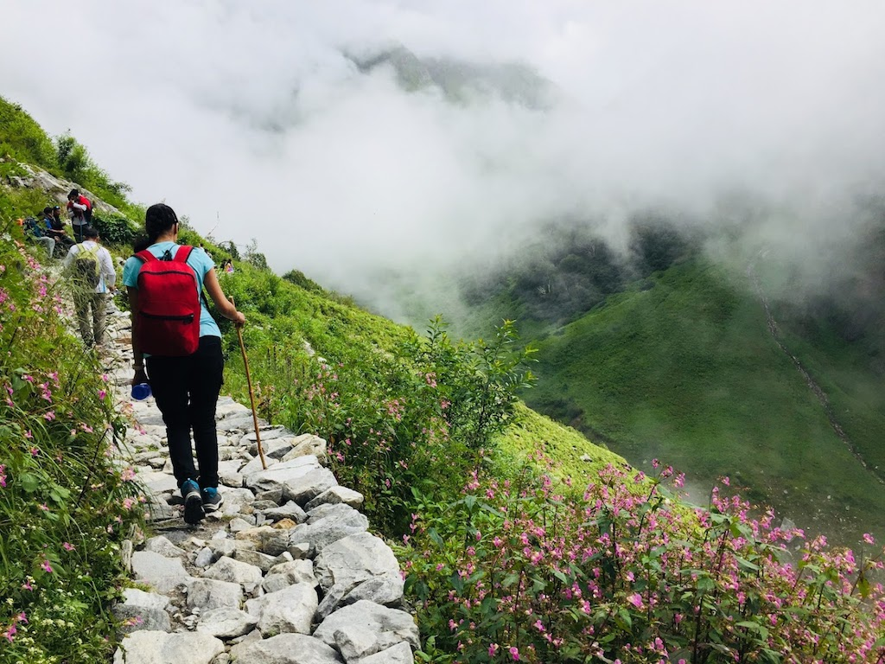

1. Triund Trek
Brief: Located near Dharamshala, the Triund Trek offers breathtaking views of the Dhauladhar range and the lush Kangra Valley. The journey takes you through dense forests, small villages, and terraced fields, making it a delightful trek for nature lovers. It’s a relatively easy trek, suitable for beginners, offering panoramic views at the top and a serene atmosphere.

Best Time To Visit: March to June, September to December
Difficulty: Easy to Moderate
Budget: ₹2,000–₹4,000
2. Chadar Trek
Brief: The Chadar Trek is one of the most unique treks in the world, held over the frozen Zanskar River in Ladakh. During winter, the river freezes, and trekkers walk across it, experiencing the harsh yet beautiful landscape of snow-covered mountains and frozen waterfalls. It's an adventurous and challenging trek, suitable for experienced trekkers looking for a thrilling experience.
Best Time To Visit: January to February
Difficulty: Difficult
Budget: ₹25,000–₹30,000
3. Valley of Flowers Trek
Brief: A UNESCO World Heritage site, the Valley of Flowers Trek takes you through a colorful landscape filled with over 500 species of vibrant flowers. Located in Uttarakhand, the trek offers lush green meadows, beautiful alpine lakes, and cascading waterfalls. It’s a moderate-level trek that attracts nature and flower enthusiasts, especially during the monsoon season when the valley is in full bloom.
Best Time To Visit: July to September
Difficulty: Moderate
Budget: ₹5,000–₹7,000
4. Kedarkantha Trek
Brief: The Kedarkantha Trek is a perfect winter trek that takes you through snow-covered trails, dense forests, and scenic viewpoints, offering a 360-degree view of the surrounding peaks. The summit offers a view of snow-capped Himalayan peaks, including Swargarohini and Black Peak. This trek is popular for beginners and families due to its manageable difficulty and the beauty it offers.

Best Time To Visit: December to April
Difficulty: Easy to Moderate
Budget: ₹6,000–₹8,000
5. Sandakphu Trek
Brief: Sandakphu offers one of the best panoramic views of the mighty Everest, Kanchenjunga, Lhotse, and Makalu peaks. This trek starts in West Bengal and passes through dense forests, villages, and high altitudes. The moderate difficulty and spectacular mountain views make this trek one of the most sought-after in the Eastern Himalayas. It's best enjoyed during the spring and autumn seasons.
Best Time To Visit: April to May, October to December
Difficulty: Moderate
Budget: ₹8,000–₹10,000
6. Chembra Peak
Brief: Located in Wayanad, Kerala, the Chembra Peak Trek is famous for the heart-shaped lake located halfway up the peak. The trek is short, scenic, and relatively easy, making it perfect for a weekend getaway. The route takes you through lush green forests and offers beautiful views of the surrounding hills and valleys. It's a family-friendly trek and offers a refreshing experience in the Western Ghats.
Best Time To Visit: September to February
Difficulty: Easy
Budget: ₹2,000–₹3,000
7. Roopkund Trek
Brief: Known for its mysterious skeletal remains, the Roopkund Trek is a high-altitude adventure that takes you through dense forests, alpine meadows, and snow-covered terrains. Located in Uttarakhand, the trek is famous for the Roopkund Lake, where human skeletal remains are found, adding a touch of intrigue to the journey. It’s a moderately challenging trek for experienced trekkers.
Best Time To Visit: May to June, September to October
Difficulty: Moderate to Difficult
Budget: ₹12,000–₹15,000
8. Tarsar Marsar Trek
Brief: Tarsar Marsar is a hidden gem in Kashmir that offers a tranquil trekking experience. The trek takes you through lush meadows, alpine lakes, and beautiful valleys. The pristine lakes of Tarsar and Marsar are surrounded by snow-capped peaks, making it a picturesque destination. It’s a moderate trek, perfect for those looking for serenity and adventure away from the crowd.
Best Time To Visit: July to September
Difficulty: Moderate
Budget: ₹10,000–₹12,000